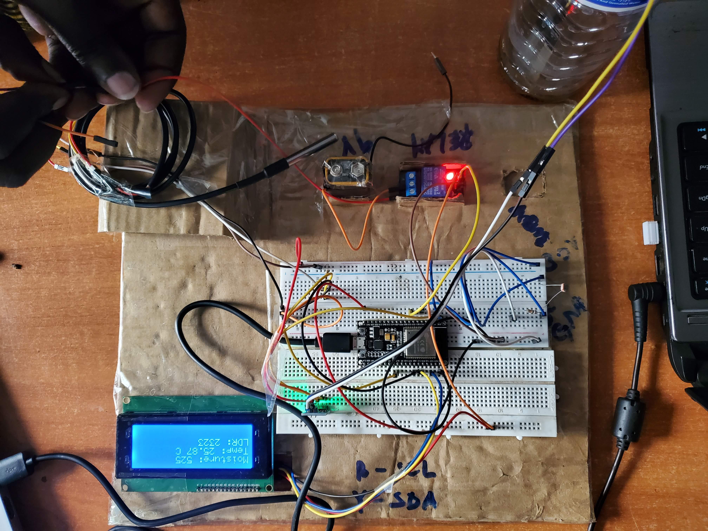
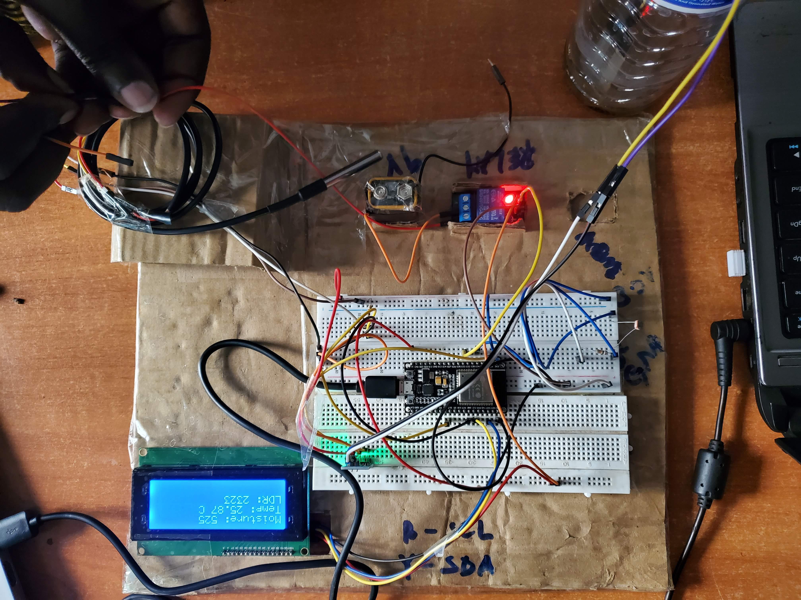

AGRIWAVE SMART IRRIGATION SYSTEM
Project Summary
The Agriwave Smart Irrigation System is an innovative solution designed to address the critical issue of water management in agriculture. The system, developed as part of a collaborative project with netLabs!lJG, integrates Internet of Things (IoT) technologies and machine learning algorithms to optimize water usage, reduce operational costs, and enhance crop yields. Leveraging real-time data from sensors, this system offers a modern, efficient, and sustainable approach to irrigation management.

Objective
The primary objective of the Smart Irrigation System is to provide an automated and intelligent irrigation solution that optimizes water delivery based on environmental conditions. By integrating IoT with machine learning, the system aims to boost crop productivity while minimizing water wastage. This ensures sustainable farming practices, especially in water-scarce regions.
System Components
The system consists of both hardware and software components that work together to provide an autonomous irrigation solution.
Hardware
The system is built around the ESP32 microcontroller, which serves as the main control unit. Various sensors, including soil moisture, submersible temperature, and light-dependent resistors (LDR), provide real-time environmental data essential for irrigation decisions. A water pump is connected to the system and activated based on the sensor readings and machine learning model predictions.
 

Machine Learning Integration
Four machine learning models—Random Forest, XGBoost, Support Vector Machine (SVM), and Logistic Regression—were trained to predict optimal irrigation schedules. The Random Forest model achieved the highest accuracy of 90.67%, and it was deployed on the ESP32 microcontroller to make autonomous decisions regarding irrigation needs. The system dynamically adjusts water supply based on real-time conditions like soil moisture, temperature, and light intensity.

Web Application
The accompanying web application was developed using the Flask framework and offers real-time visualization of sensor data. Farmers can monitor the system's performance, view irrigation trends, and control settings remotely. The app integrates with Firebase to receive live updates and visualizes the latest sensor data through dynamic charts.
The web app allows manual control for farmers who may want to adjust irrigation settings based on specific requirements. It also facilitates the selection of crops and irrigation thresholds to optimize water delivery for different plant types.


Prototype


Meet the Team

Okiror Samuel Vinald
Project Leader

Beijuka Bruno
Machine Learning

Amwine Nickson
Machine Learning

Viola
Researcher

Naava Daphine
Web Development

Mukalazi Ivan
Web Development

Nakiganda Patricia
IoT

Kakeeto Creavins
IoT

Hisham Imran
Machine Learning